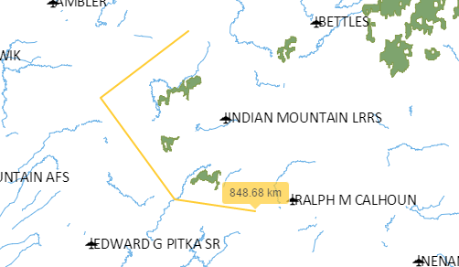

Help
This document describes this Web map applications's controls and their usage.
Navigation
To move the map around, click-and-drag on it using the mouse's left button.
To zoom in and out, besides the zoom buttons and slider, you can use the scroll wheel. You can also zoom in to a rectangle. To do it, press the SHIFT key while you click-and-drag around the area of interest with the left mouse button.
You can rotate the map by pressing SHIFT+ALT keys while you click-and-drag the map.
Depending on the settings, clicking on map features will open a pop up menu with the features attributes.
Layers list
The layer list shows the layers in the application and allows managing them. Click the Layers button to displays the layers list.
An eye icon is shown along the name of each layer, which allows toggling the layer's visibility.
The rendering order of layers can be modified by clicking-and-dragging the layer's names in the list. Layers on top are rendered at the end and will have rendering priority.
For vector layers, the Zoom to button can also be available. Clicking on it will cause the map extent to change to the minimum extent that covers all the features in the layer.
Clicking the Other options button shows extra options.
The opacity of the layer can be controlled using the Opacity slider.
A Download layer button can also be available for vector layers, allowing to download the layer in a predefined file format
Vector layers features can be filtered using expressions on their attributes. Clicking on the filter icon shows the filter dialog
To add a new filter, enter an expression in the text box and click the ADD button. The Layer only renders features in the map canvas that match the active filters.
All active filters are listed below the filter field. Click on the Remove button to remove a filter.
For information on the filter syntax, click the question mark icon next to the filter field.
In the Layer list, depending on the web app settings, it may be possible to upload a local files and create new layer.
To upload a file, click the Add Layer. In the New layer dialog, for Select layer source select Upload local file. Then, clicking the Upload file button next to Select location, browse and select the file you which to upload. Only vector layers can be uploaded. The supported formats for layers are *GeoJSON*, *GPX* and *KML*.
To create a new layer, click the Add Layer. In the New layer dialog, for Select layer source select Create new layerUpload local file. Then, type the Layer title and choose the Geometry type. Attributes can be added by typing their names in a comma-separated list.
Both Upload a file and Create New Layer options allow you to set the Fill and Stroke colors for the layer's features, as well as the Stroke width
.Draw feature
The Draw Feature allows you to add new features to existing vector layer, as long as they have been configured for that purpose.
To add a new feature in any layer, click the Draw Features button and select the type of geometry you wish to create.
Then, click the map canvas to add vertexes to the feature. For polygons and lines geometries, you must add several vertexes. Double-click to add the last vertex and finish drawing.
Once the drawing is finished, the attributes dialog shows, where you can edit the new feature's attributes. Select the layer that you want to assign the feature to. Only layers with the same geometry type as the drawn geometry will show in the drop-down list.
Once the layer is selected, you can edit the attributes of the new feature. Click Add to save the attributes and the geometry and add it to the designated layer. Clicking Cancel will discard both the attributes and the geometry changes, and no feature is added.
Measure
Measure tools are used to get area and distance measurements over the map canvas.
Click the Measures button and select one of the available tools: Distance or Area.
Select the distance tool to measure distances. Click on the map to set the points that define the line to measure.
When you have finished defining the line, double-click to end.
Select the area tool to measure areas. Click on the map to set the points that define the polygon to measure.

When you have finished defining the line, double-click to end.

To remove the lines and polygons created by the distance and are tools, click the measures button and select the Remove option.
To go back to map navigation mode, click the Navigation button.
Selection
Selection tools are used to select features in the vector layers of the web app that allow selection. Two selection tools are available: Select by Rectangle and Clear Selection.
If the Select by Rectangle tool is active, you can click and drag to define a rectangle. All features in all selectable layers which are within the polygon will get selected. Previous selection, if it exist, will be removed.
Selected features will be rendered in a yellow color, to differentiate them from non-selected ones.
To go back to map navigation mode, click the Navigation button.
Geocoding
The geocoding tools allows to search places by name and find them in the map.
To use it, start typing the name of a place in the search field. As you type, a list of places containing the search text will be shown as links.
.
Click on a link to see the corresponding place in the map. The map wil be moved to the coordinates of the point, and a marker will be added to indicate its position.